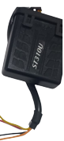
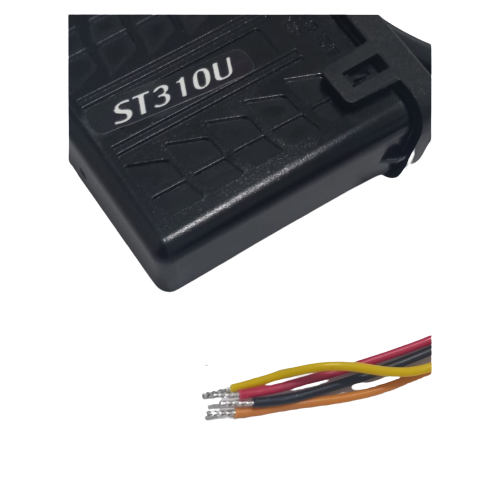

Rastreador Veicular
O ST310U é um dispositivo de rastreamento fixo, composto por tecnologia GPS e GSM/GPRS, foi concebido especialmente
para aplicação em veículos
O módulo recebe a localização a
partir de satélites e transmite
estes dados para o servidor prédefinido.
Além da função básica o
módulo possui um
acelerômetro. Com este sensor
é possível identificar se o
veículo está em movimento ou
parado, facilitando a instalação
e deixando a operação.

Role para baixo para mais

Taxa de instalação:
R$ 100,00
Mensalidade: R$59,90
*unitário
Taxa de instalação:
R$ R$ 50,00
Mensalidade: R$50,00
*acima de 50 veículos
